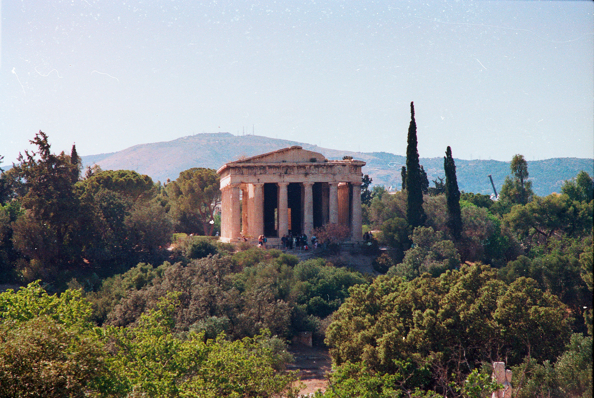

L'Idea
Durante i miei viaggi tendo ad evitare il più possibile di scattare foto con il mio telefono, credo infatti che si corra il rischio di non viversi a pieno il momento nel tentativo di ottenere lo scatto perfetto. Per questo motivo preferisco utilizzare macchine fotografiche più vintage, dove le foto possono essere viste solo dopo la fine del viaggio. Uno dei problemi principali della fotografia su rullino è però il costo di essa, nonché la difficoltà nel trovare luoghi che ancora lavorano le pellicole.

Grecia 2024 - Kodak Gold 200 Iso su Praktica LTL3
Questo progetto ha lo scopo di replicare la stessa esperienza di scatto tipica di una macchina vintage, rendendo il tutto più accessibile senza sacrificare le parti migliori della fotografia analogica